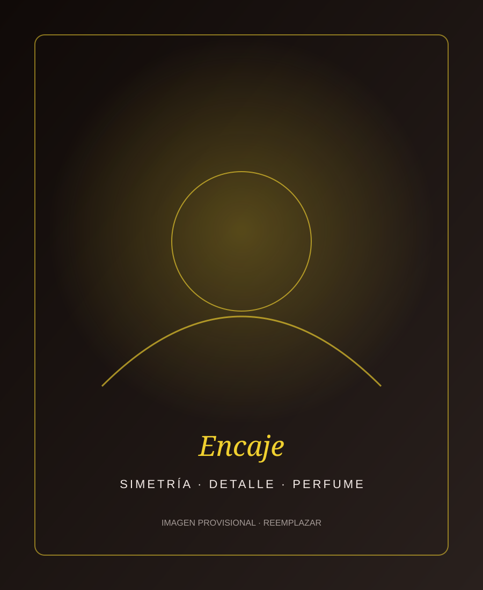
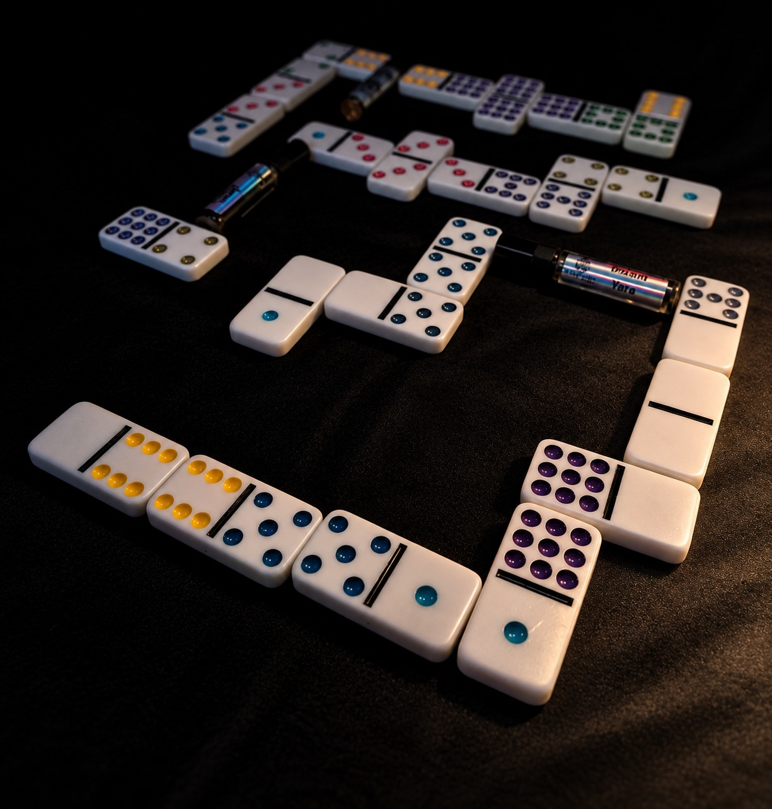
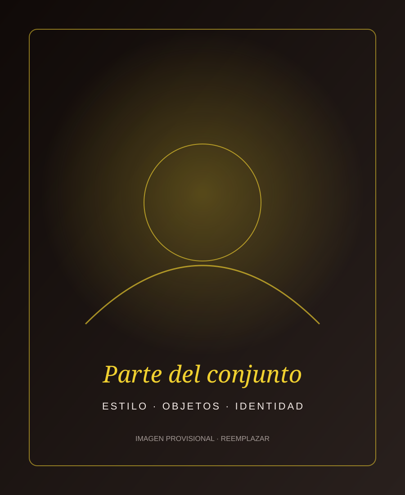
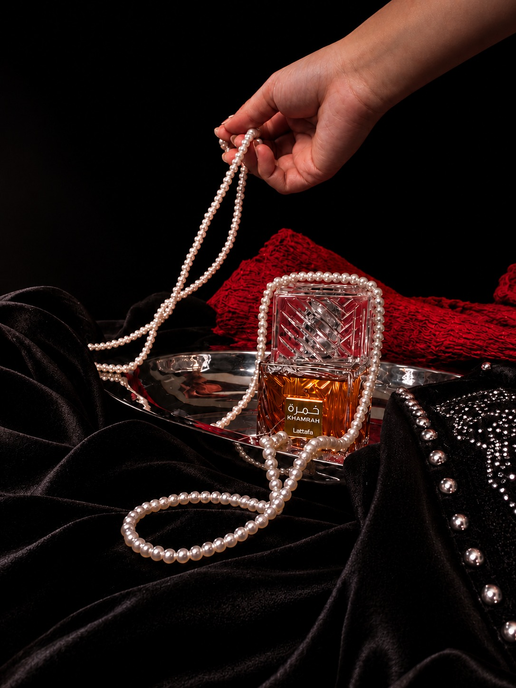
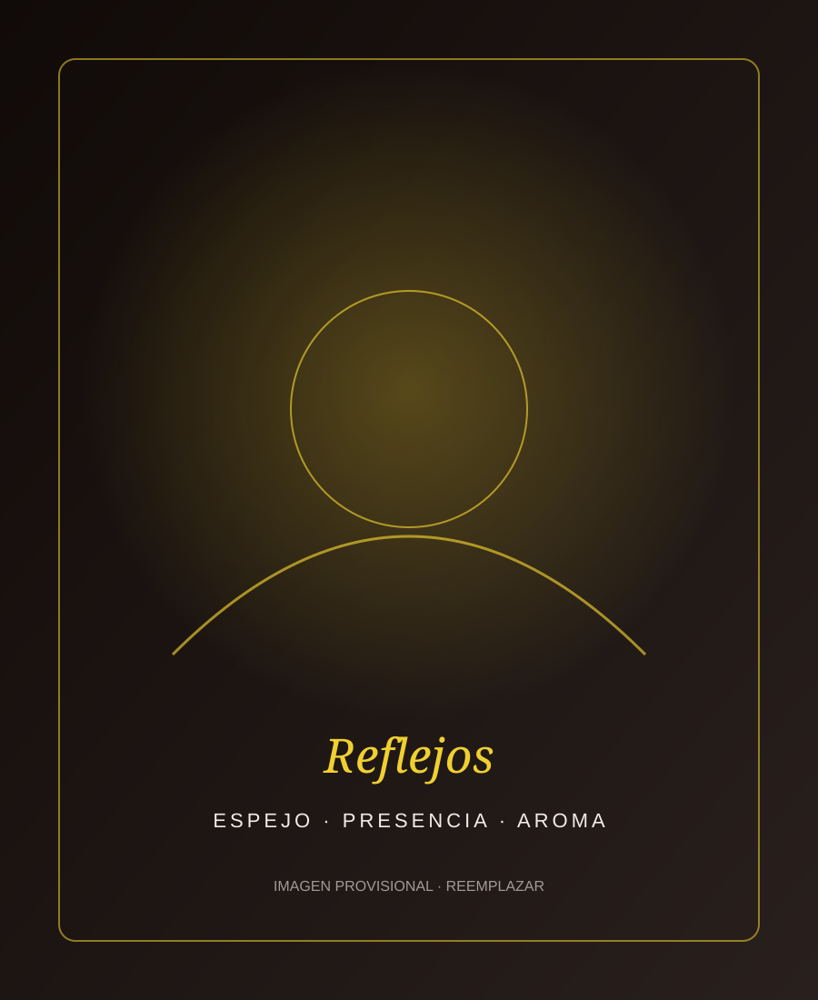
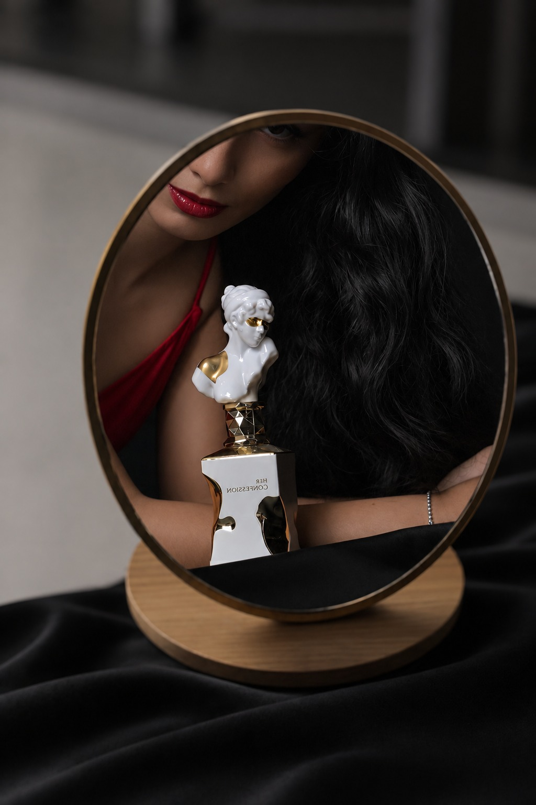
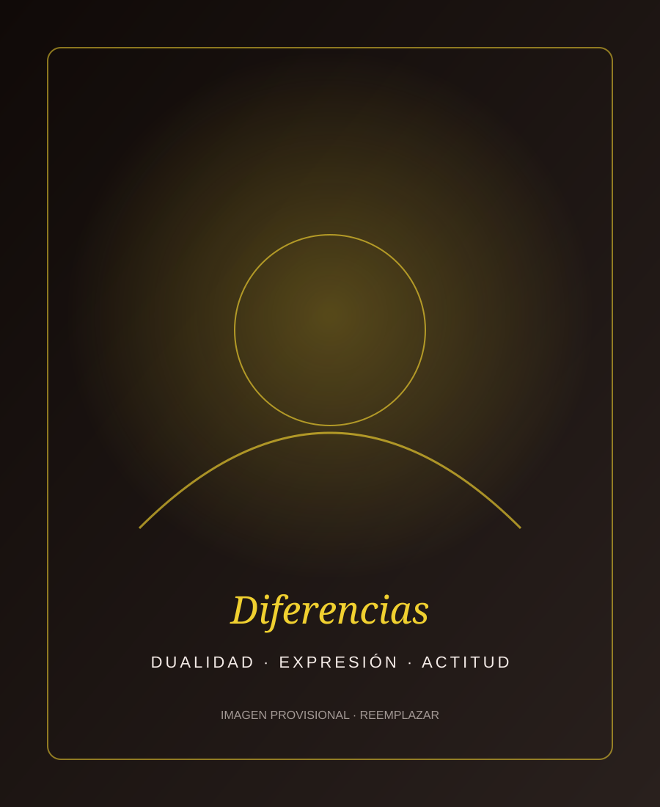
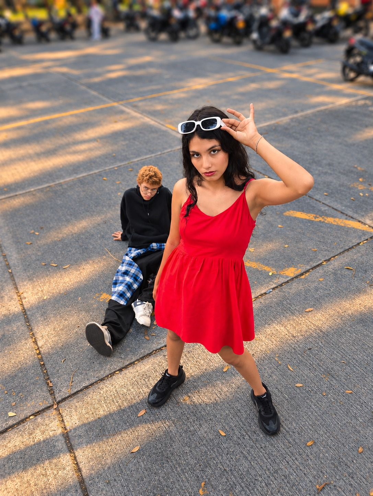
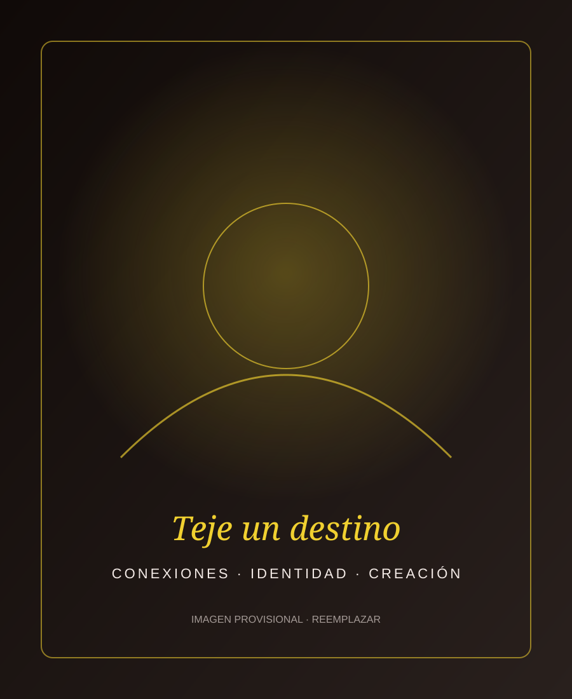
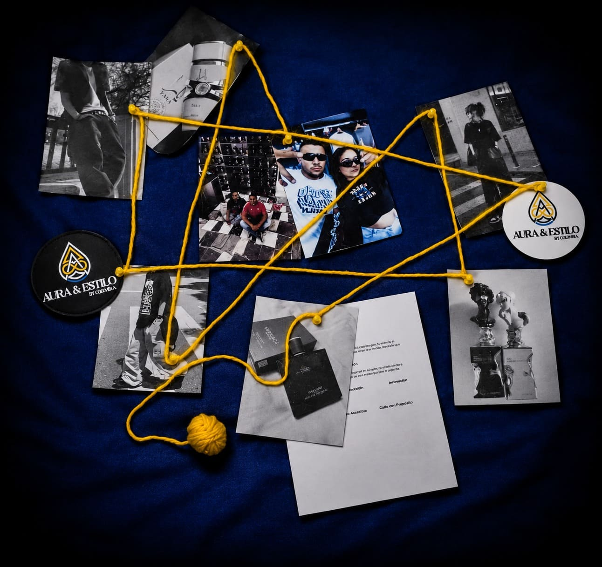

¿En qué momento una fragancia deja de ser un simple aroma para convertirse en la pieza clave con la que nos presentamos ante el mundo?
A lo largo del tiempo, la vestimenta y los aromas han sido las herramientas con las que materializamos nuestras creencias, nuestra actitud y la visión que tenemos del entorno. La imagen personal deja de ser un asunto superficial para transformarse en una decisión estratégica: un juego donde la única victoria real es mantenerse fiel a la propia identidad, y donde el perfume es la jugada que asegura el movimiento.
En un escenario saturado de categorías y etiquetas rígidas, esta serie fotográfica expone que dos universos que solemos ver como opuestos, las reglas establecidas y el juego estratégico de construir nuestra propia identidad, no solo pueden convivir, sino potenciarse. A través de composiciones de alto contraste y un intencionado juego visual, el aroma se presenta como un acto de autonomía para adueñarnos de nuestra presencia sin pedir permiso.
Aura y Estilo propone entender la perfumería como el toque final de la personalidad: una herramienta estética donde el estatus no se impone, se elige.
Proceso Metodológico & Curaduría
Detrás de cámara: investigación empírica y dirección de arte
Investigación
Antes del primer disparo en estudio, una investigación mixta —encuesta cuantitativa (n=50) y entrevistas cualitativas (n=25)— permitió descubrir qué detiene la mirada en redes sociales, qué frena la compra digital de perfumería y qué recursos visuales convierten una publicación en confianza real.
“En la venta digital de perfumería, el consumidor no solo busca una fragancia, sino reducir el riesgo de equivocarse, buscando tener una cercanía hacia las fragancias antes que confiar ciegamente. El empaque y experiencias atraen, pero la descripción precisa y las garantías de calidad deciden.”
El contraste entre uso cotidiano y frecuencia de compra define la estrategia: el perfume forma parte del ritual diario de la audiencia, pero su reposición directa ocurre de manera ocasional o como obsequio. Esto exige construir cercanía, honestidad y prueba tangible antes de pedir una compra.
Uso frecuente o diario
66%
De los encuestados incorpora la fragancia en su rutina habitual.
Compra ocasional
48%
Adquiere perfumes de forma puntual, complementado por un 42% esporádico.
Composición de muestra
58% / 36%
Femenino (58%), masculino (36%) y 6% prefiere no indicarlo; 44% mayores de 45 años y 34% de 18 a 24 años.
En el entorno digital, la audiencia decide en segundos si se detiene ante una publicación. Las entrevistas cualitativas revelaron que la elegancia se asocia con tonos sobrios —negro, dorado, vino tinto y gamas frías—, iluminación equilibrada, orden visual y transparencia sobre fijación y duración.
Alto atractivo visual indispensable (5/5)
52%
Demostración real del producto en uso
50%
Estética del empaque y diseño del frasco
44%
Testimonios reales de otros clientes
44%
Videos con reseñas según la ocasión
36%
El mayor freno de conversión es el miedo a comprar un aroma a ciegas. Además, el público abandona las cuentas por publicidad engañosa, saturación de ofertas agresivas o contenido robótico sin personalidad propia. Por ello, Aura y Estilo impulsa los decants como puerta de entrada accesible.
No compra sin haberlo olido previamente
46%
Solo compraría con muestras previas o garantía
32%
Relación calidad-precio como factor decisivo
36%
Descripción detallada (duración y familia olfativa)
30%
Compraría a ciegas solo con reseñas
22%
Los videos breves lideran el consumo de perfumería en redes. Para activar comentarios y guardados, el contenido debe reemplazar los anuncios estáticos por aplicaciones reales, notas olfativas claras y precios visibles sin fricción.
Videos cortos (Reels / TikTok / Shorts)
58%
Formato preferido frente a fotografía de producto (20%) e Historias (14%).
Comentarios por precio o disponibilidad
48%
Motivo principal de interacción escrita; un 40% rara vez comenta.
Guardar para compra futura
40%
Guarda fragancias de interés y un 28% conserva catálogos de precios.
Marco simbólico y audiovisual
Cada decisión visual responde a una lectura cultural clara: acercar el mundo de las fragancias a la expresión urbana cotidiana, sin códigos excluyentes ni etiquetas rígidas.
La huella invisible del aura
La identidad gráfica de Aura y Estilo se concentra en la gota: un símbolo asociado a la esencia concentrada, la memoria sensorial y la estela que permanece incluso cuando la persona ya salió de la habitación. Mientras la marca madre Cármika se vincula con el sol y la fuerza gráfica de la calle, la gota encarna esa presencia sutil que completa el estilo personal sin imponerse.
Sofisticación nocturna y energía contemporánea
La paleta cromática articula el negro profundo y el gris grafito —asociados con elegancia, sobriedad y orden— junto con el dorado acento que aporta calidez y distinción, y el azul profundo como señal de frescura y modernidad. Los colores, accesorios y fragancias se presentan con libertad, evitando encasillar un aroma o un tono en un único género.
La identidad como jugada consciente
A través de juegos visuales como el ajedrez, el dominó y el reflejo frente al espejo, la serie propone que elegir cómo oler es una decisión estratégica sobre quién queremos ser hoy. El perfume deja de presentarse como un privilegio inalcanzable y se convierte en una herramienta cotidiana de autenticidad, equilibrio y autonomía personal.
Movimientos contenidos y contraste limpio
En la narrativa en movimiento, cada gesto se dirige con precisión: el instante al aplicar la fragancia, la caída natural de una prenda holgada y la pausa de la mirada antes de salir. El ritmo visual combina planos serenos con acentos sonoros intensos, logrando que la elegancia clásica y el pulso urbano dialoguen en una misma escena.
Referencias conceptuales de fotografía
Cuatro referentes visuales, narrativos, sonoros y coreográficos extraídos del universo creativo de Aura y Estilo orientan la puesta en escena de toda la serie.
Referente Editorial & Luz
Tom Ford Beauty & Byredo
Lujo, sensualidad, minimalismo y contrastes de luz fuertes y bien definidos.
Referente Narrativo
Gambito de Dama (The Queen's Gambit)
La metáfora del ajedrez como tablero de estrategia, inteligencia y construcción de estatus personal.
Referente Sonoro
Woodkid ("Guns for Hire") & Lorn ("Acid Rain")
Dimensión sonora del universo visual; fusión de orquestación sinfónica con ritmos electrónicos pesados y la profundidad del bajo electrónico.
Referente de Movimiento
Jacob Jonas The Company (Danza Contemporánea Urbana)
Dirección de movimiento, soltura del movimiento urbano y captura en suspensión de la bruma del perfume al atomizar.
Escaleta de producción
Planificación visual de las cinco obras que integran la exposición, articulando bodegones de producto, demostración de uso y retratos de dualidad e identidad.
Encaje (Dominó)
Los decants sustituyen piezas dentro de una partida de dominó para representar cómo distintas esencias pueden coexistir y encajar en una misma identidad. La escena propone equilibrio entre fuerza y delicadeza, entre la tradición de la perfumería y la frescura contemporánea.
ProtagonistaDecants seleccionados (10 ml)
Eje simbólicoCoexistencia de facetas personales
IluminaciónLuz lateral direccional de alto contraste
EncuadrePlano detalle cenital / 45 grados
Parte del conjunto (Bandeja)
El frasco se presenta sobre una bandeja acompañado por accesorios y objetos personales cotidianos. La composición comunica que el estilo se construye en la relación armónica entre lo que vestimos, lo que portamos y el aroma que elegimos como cierre.
ProtagonistaFrasco principal y accesorios
Eje simbólicoRitual diario e integración del estilo
IluminaciónReflejos limpios y sombras suaves
EncuadreBodegón abierto en plano medio
Reflejos (Espejo)
El encuentro entre el espejo, el perfume y la persona plantea una pausa reflexiva sobre la imagen propia y lo que se desea proyectar al mundo. La fragancia funciona como una extensión de la identidad que trasciende lo visible.
ProtagonistaPerfume en diálogo con espejo
Eje simbólicoAutoconocimiento y presencia
IluminaciónContraluz suave con brillo especular
EncuadreDoble lectura en primer y segundo plano
Diferencias (Conexión)
Dos jóvenes de estilos opuestos comparten el mismo espacio: una figura con vestido rojo y postura autoritaria junto a otra con ropa callejera y silueta oversize en actitud relajada. La escena encarna la dualidad de la marca y demuestra que dos expresiones distintas pueden convivir con autenticidad sin aislarse.
ProtagonistasDos modelos en contraste estilístico
Eje simbólicoDualidad elegancia y cultura urbana
IluminaciónClave baja dramática con acento cálido
EncuadrePlano entero / tres cuartos equilibrado
Teje un destino
Montaje fotográfico en el que los creadores de la marca se sitúan en el centro mientras distintos hilos los enlazan con todo lo que han construido. Simboliza el propósito de Aura y Estilo: que el perfume sea el último vínculo necesario para conectar cada parte de la identidad personal.
ProtagonistasCreadores de Aura y Estilo by Cármika
Eje simbólicoVínculo entre origen, moda y aroma
IluminaciónIluminación central envolvente
EncuadreComposición coral en eje simétrico
Exposición Fotográfica Oficial
Hora de la Galería
Explora nuestra Galería


Obra 01 · A3
Encaje
Los decants sustituyen piezas del dominó para mostrar cómo distintas esencias coexisten en equilibrio dentro de una misma identidad.
ArchivoEncaje.jpeg
FormatoA3 / 297 x 420 mm
SerieObjeto & Esencia


Obra 02 · A2
Parte del conjunto
El perfume sobre una bandeja junto a accesorios y objetos personales: el estilo se construye en diálogo con todo lo que portamos.
ArchivoParte del conjunto.jpeg
FormatoA2 / 594 x 420 mm
SerieObjeto & Esencia


Obra 03 · A3
Reflejos
Diálogo entre el espejo, el perfume y la presencia personal: una reflexión íntima sobre aquello que proyectamos más allá de la vista.
ArchivoReflejos.jpeg
FormatoA3 / 297 x 420 mm
SerieObjeto & Esencia


Obra 04 · A3
Diferencias
Se muestra a dos jóvenes opuestos, una con un vestido rojo y pose autoritaria, el otro con ropa callejera y oversize en pose relajada, mostrando la dualidad de la marca y la identidad propia.
ArchivoDiferencias.jpeg
OrigenDIFERENCIAS_TEJEUNDESTINO.pdf
FormatoA3 / 297 x 420 mm


Obra 05 · A3
Teje un destino
Montaje de fotografías en donde los creadores de la marca se encuentran en el medio y los hilos los conectan con lo que han creado, una marca que busca que el perfume sea la última parte para conectar tu identidad.
ArchivoTeje un destino.jpeg
OrigenDIFERENCIAS_TEJEUNDESTINO.pdf
FormatoA3 / 297 x 420 mm
Dos Universos · Una Identidad
Identidad de Marca
Origen: de Cármika a Aura y Estilo
Aura y Estilo by Cármika nace directamente de su marca madre Cármika, reconocida por su propuesta de moda urbana en camisetas oversize y gorras que transforman lo cotidiano en expresión auténtica.
A partir de ese origen callejero, Aura y Estilo surge como una línea especializada en perfumería de alta calidad y decants, integrando dos dimensiones complementarias de la identidad personal: la fuerza visual de la indumentaria urbana y el poder invisible de la fragancia.
El perfume se posiciona así como el toque final e indispensable del estilo, elevando el vestuario urbano hacia una dimensión de sofisticación, orden y carácter propio.
Símbolo, Tipografía y Propósito
Mientras Cármika conserva el símbolo del sol, Aura y Estilo adopta la gota como emblema de la esencia, la estela sensorial y aquello que se percibe más allá de la apariencia.
La voz tipográfica combina Avigea Italic en títulos y cabeceras con una fuente secundaria limpia de alta legibilidad para fichas, catálogos y narrativa editorial, asegurando coherencia en cada punto de contacto digital.